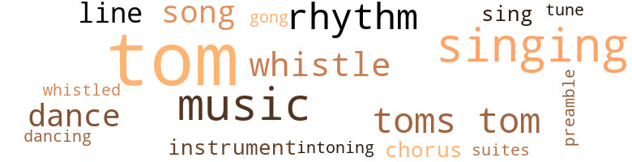
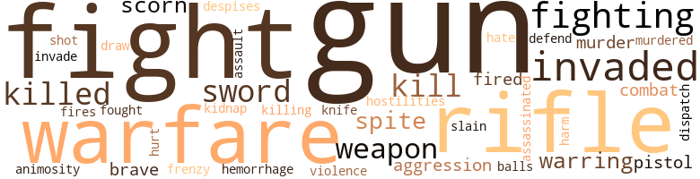
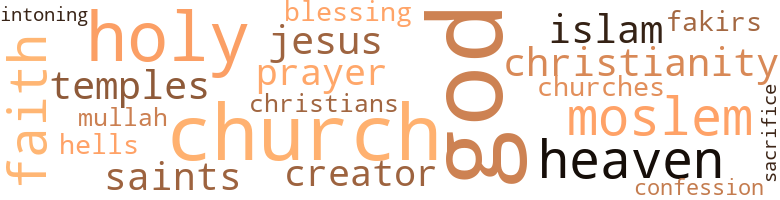

Solemn Hour (The), by McKenzie, William P. (1972)
93 music-related terms matched in this text.
Most frequent terms in this topic: tom-toms (19); singing (12); tom-tom (11); music (11); rhythm (7)
chorus.n.01
Definition: any utterance produced simultaneously by a group
| word | sentence |
|---|---|
| chorus | When I visited Arcadia , as I approached the palace at Sidda , which was on New Year 's day , I heard a chorus singing , intermingled with tom-tom drums . |
| chorus | I could hear distinctly a male voice singing , followed by an ensemble of mixed chorus , along with dancing . |
dance.n.01
Definition: an artistic form of nonverbal communication
| word | sentence |
|---|---|
| dance | Then the emcee blew his whistle , and six dancing boys appeared in a song and dance , singing : " A joko junk con junk , cojo cojo cojo junk . " |
| dance | With their baritone voices , and their feet doing a stomp on the wooden floor , this was also a very colorful dance and rivaled the last dance . |
| dance | With their baritone voices , and their feet doing a stomp on the wooden floor , this was also a very colorful dance and rivaled the last dance . |
dance.v.03
Definition: skip, leap, or move up and down or sideways
| word | sentence |
|---|---|
| dancing | He now heard a little louder the drums and the merry-makers singing and dancing the songs of " Drums of Peace . " |
| dance | " Oh yes , I am - Bungo Feefe , be gone - you may go now , and thanks for bringing me - I 'll dance at your wedding ! " |
| dance | " Oh , that 's nothing , they know that I am in the house - hold of the Emperor - they usully dance for the Emperor each Thursday afternoon . |
gong.n.01
Definition: a percussion instrument consisting of a metal plate that is struck with a softheaded drumstick
| word | sentence |
|---|---|
| gong | Sar Assak went to a big copper gong hanging on the wall , and struck it forcibly several times . |
music.n.01
Definition: an artistic form of auditory communication incorporating instrumental or vocal tones in a structured and continuous manner
| word | sentence |
|---|---|
| music | Pass the word along , that due to the passing of Princess Abenez , the Emperor wishes no music today . " |
| music | The music and dancing stopped somewhat abruptly and in walked the Emperor , side by side with his Empress , Wizero Nemam , followed by the Crown Prince and his teenage brother by his side . |
| music | Then turning to the audience , the Emperor said : " Very well done - you may go on with the music ! " |
| music | Another whistle was heard as the music resumed , the dancers and singers doing their usual act . |
| music | Another whistle was heard , the music stopped and a dancing couple entered to the rhythm of another tune , do - ing a specialty dance . |
| music | The sing - ing and dancing were fantastic and unique - and then a whistle was heard apparently offstage ; the music and the singing stopped immediately , as though a record player had been shut off . |
| music | The girl stopped the tom-tom music and spoke to Sar Gugsa . |
| music | At this point the music rattled a welcome sound . |
| music | On with the music . " |
| music | After awhile , the Queen stopped the music saying , " Wait , just a moment . |
| music | The Empress turning to the musicians , said , " Let the music go on . " |
musical_instrument.n.01
Definition: any of various devices or contrivances that can be used to produce musical tones or sounds
| word | sentence |
|---|---|
| instrument | " The Pact of Paris , on the other hand , sponsored orig - inally by France and the United States , and now in effect between sixty-three Nations , absolutely renounces war as an instrument of National policy , although war in self - defense is tacitly permitted . |
| instrument | Ar - ticle One : The high contracting Parties solemnly declare in the names of their respective peoples , that they condemn recourse to war for the solution of international controver - sies , and renounce it as an instrument of National policy in their relations with one another . |
preamble.n.01
Definition: a preliminary introduction to a statute or constitution (usually explaining its purpose)
| word | sentence |
|---|---|
| preamble | " THE PURPOSE OF THE LEAGUE , the preamble of the Covenant lays down the two main purposes of the League as follows - to promote international cooperation and to achieve international peace and security . |
rhythm.n.04
Definition: the arrangement of spoken words alternating stressed and unstressed elements
| word | sentence |
|---|---|
| rhythm | Prince Nennokam spoke to his Father , " Oh Father dear , how strange the rhythm of the tom-toms . " |
| rhythm | Another signal in a different rhythm came over the hills . |
| rhythm | The drummers were beating the " drums of Peace , " the same rhythm and song as was heard in the begining of our story , in Chapter One . |
| rhythm | Another whistle was heard , the music stopped and a dancing couple entered to the rhythm of another tune , do - ing a specialty dance . |
| rhythm | But there was something unusual in the beat and rhythm of the tom-toms , something that was not at all customary about the agitated and insistent pound - ing - it was the call of the war drums . |
| rhythm | Henriques continued his information : " Oh , my friend , in Africa , every rhythm of the drums has got a meaning . |
| rhythm | The rhythm you 're now listening to is the Enchanted Drums of the Night . |
sing.v.02
Definition: produce tones with the voice
| word | sentence |
|---|---|
| sing | The sing - ing and dancing were fantastic and unique - and then a whistle was heard apparently offstage ; the music and the singing stopped immediately , as though a record player had been shut off . |
| sing | Sar Assak jumped into the conversation by saying , " Yes , when we all see Abenez we ' lI sing and shout for victory . " |
singing.n.01
Definition: the act of singing vocal music
| word | sentence |
|---|---|
| singing | The singing was simply charming , so I kept on walking towards the huge iron gate , where stood two masters at arms on sentinel duty - so as I approached the gate , one of them asked , " Are you an American ? " |
| singing | He showed me the direction to the hall , where the singing had been coming from . |
| singing | They kept on their act with their singing in the Arcadian dialect . |
| singing | And the dancing Ensemble responded singing , " To ya to wa ya . " |
| singing | This singing and dancing kept up for about ten min - utes , when a whistle was heard and a voice announced : " His Majesty , the King of Kings - Sar Irafat the First , and his royal family . " |
| singing | Soon the whole house joined in the singing . |
| singing | Then the emcee blew his whistle , and six dancing boys appeared in a song and dance , singing : " A joko junk con junk , cojo cojo cojo junk . " |
| singing | He now heard a little louder the drums and the merry-makers singing and dancing the songs of " Drums of Peace . " |
| singing | The sing - ing and dancing were fantastic and unique - and then a whistle was heard apparently offstage ; the music and the singing stopped immediately , as though a record player had been shut off . |
| singing | The beating of the drums of peace and the singing of the words of peace now seem louder as the Wezero Nemam nudges the Emperor to look alive . |
| singing | As the singing and drumbeat fade , the Emperor again sees and hears the Abuna Cyril and two other Abunas enter the room . |
| singing | So we continue to hear the male baritone voice leading the festivities singing as usual : " Oh sanda see , sanda la - sanda la-a-a-ah , sanda see . " |
song.n.01
Definition: a short musical composition with words
| word | sentence |
|---|---|
| song | I really did not know the meaning of the song , nor did I know what they were saying , or the right pro- nunciation of the words . |
| song | The drummers were beating the " drums of Peace , " the same rhythm and song as was heard in the begining of our story , in Chapter One . |
| song | These were the words of the song : " A heechy bamba , heechy bamba , heechy bamba . " |
| song | Then the emcee blew his whistle , and six dancing boys appeared in a song and dance , singing : " A joko junk con junk , cojo cojo cojo junk . " |
| songs | He now heard a little louder the drums and the merry-makers singing and dancing the songs of " Drums of Peace . " |
suite.n.01
Definition: a musical composition of several movements only loosely connected
| word | sentence |
|---|---|
| suites | A soldier-in-waiting will escort you to your various suites , " and so saying he left the room . |
tenor_drum.n.01
Definition: any of various drums with small heads
| word | sentence |
|---|---|
| tom-toms | Prince Nennokam spoke to his Father , " Oh Father dear , how strange the rhythm of the tom-toms . " |
| tom-toms | The beating of tom-toms suddenly became more audible , gradually growing louder and louder . |
| tom-tom | Then Doctor Neyab said , " Your Majesty , there 's a mes - sage coming to us by tom-tom wireless . |
| tom-toms | Gugsa stood petrified and then another crowd gathered around him , beating tom-toms . |
| tom-tom | Then Prince Nasow entered , the sound of tom-tom wire - less echoing over the hills . |
| tom-tom | Relay the news from town to town , province to province via tom-tom wireless . |
| tom-tom | At this time , signals from tom-tom came over the hills . |
| tom-toms | The sound of tom-toms began signaling . |
| tom-tom | The Arcadians have so far recaptured several towns held by the Scitians - and I learned through tom-tom wireless that they have penetrated several hundred miles into Scitian Somaliland . " |
| tom-toms | The sounds of the tom-toms could be heard in several directions , relaying the news . |
| tom-tom | " The news will soon reach Sidda by tom-tom , " said Lieutenant Two . |
| tom-toms | At that moment , the sun went under the clouds and the sound of the tom-toms grew to an overpowering fortis - simo . |
| tom-toms | He started to leave , and as the sound of tom-toms was heard coming from over the hills , the Emperor spoke to him . |
| tom-toms | " The tom-toms speak my friend . |
| tom-toms | The sound of bugles and tom-toms could also be heard . |
| tom-toms | Sounds of tom-toms were heard , and a voice said : " His Emperor , Irafat the First . |
| tom-toms | They stayed in action as tom-toms continued beating in the distance . |
| tom-tom | I am of the opinion - " Gugsa interrupted : Yes , I know , I 've just learned by tom-tom that she has expired ; but I am not taking it for granted , I 'll wait for further confirmation from the Palace . |
| tom-toms | Then , a faint sound of tom-toms came echoing over the hills . |
| tom-toms | " Neither did I , until we heard the tom-toms as we were returning . " |
| tom-tom | Empress Wizero Nemam answered her daughter , " Hush ; hush girl , hush - learn to lake it with a smile , my child , " Then the sound of tom-tom drums was heard in the dis - tance . |
| tom-tom | " Yes , " answered Irafat , and turning to the boy he asked , " Are you learning to read the tom-tom signals ? " |
| tom-tom | This proclamation must reach the people of Timbucktu immediately ; you can have it done by tom-tom relay . " |
| tom-toms | At this moment , distant tom-toms grew louder and louder . |
| tom-toms | But there was something unusual in the beat and rhythm of the tom-toms , something that was not at all customary about the agitated and insistent pound - ing - it was the call of the war drums . |
| tom-toms | The tom-toms , which had been playing softly , were now fortissimo , as a group of native war-dancers appeared , lead by Tamanya . |
| tom-tom | When I visited Arcadia , as I approached the palace at Sidda , which was on New Year 's day , I heard a chorus singing , intermingled with tom-tom drums . |
| tom-toms | The following evening , about 7 p.m. - in the distance , the sound of tom-toms could be heard . |
| tom-toms | Dr. Brigham spoke , " Aha - my British friend - I was just beginning to feel bored with that perpetual beating of the tom-toms . |
| tom-toms | The beating of the tom-toms ceased . |
tone.v.01
Definition: utter monotonously and repetitively and rhythmically
| word | sentence |
|---|---|
| intoning | Gugsa panting furiously , seemed to hear the voice of the Abuna Cyril intoning these words : " Sar Irafat , Emperor of Arcadia - King of Kings , Tiger of Haduj , Ye are now the chosen Ruler of the People of Arcadia . |
tune.n.01
Definition: a succession of notes forming a distinctive sequence
| word | sentence |
|---|---|
| lines | All of those who said " two " took one step forward , so that instead of the usual two lines , there were now four lines of men . |
| lines | The men responded to the command , and the four lines were back to two lines . |
| tune | Another whistle was heard , the music stopped and a dancing couple entered to the rhythm of another tune , do - ing a specialty dance . |
| line | " So you see , with the exception of the Regent , Sar Irafat , you are second in line . " |
| line | Gugsa answered , " Irafat has twice declined to be Em - peror - therefore Gugsa 's chance is now first in line . " |
whistle.v.01
Definition: make whistling sounds
| word | sentence |
|---|---|
| whistle | At that moment a whistle was heard in the distance , followed by a voice : " His Majesty , Sar Irafat the First ! " |
| whistle | This singing and dancing kept up for about ten min - utes , when a whistle was heard and a voice announced : " His Majesty , the King of Kings - Sar Irafat the First , and his royal family . " |
| whistle | Another whistle was heard as the music resumed , the dancers and singers doing their usual act . |
| whistle | Another whistle was heard , the music stopped and a dancing couple entered to the rhythm of another tune , do - ing a specialty dance . |
| whistle | Then the emcee blew his whistle , and six dancing boys appeared in a song and dance , singing : " A joko junk con junk , cojo cojo cojo junk . " |
| whistle | The sing - ing and dancing were fantastic and unique - and then a whistle was heard apparently offstage ; the music and the singing stopped immediately , as though a record player had been shut off . |
| whistled | Monsieur Decordova whistled and laughed , " I heard that the plains are covered with coarse grass , about five feet high - making bushwhacking tactics rather easy . " |
113 violence-related terms matched in this text.
Most frequent terms in this topic: guns (20); fight (12); warfare (7); invaded (5); rifle (4)
aggression.n.01
Definition: a disposition to behave aggressively
| word | sentence |
|---|---|
| aggression | It would , how - ever , draw the Council 's most serious attention to the in - creasing gravity of the threat of Scitian aggression , owing to the continued dispatch of reinforcements of troops , and other preparations despite our pacifist attitude . |
| aggression | We earn - estly beg the Council to take as soon as possible all pre - cautions against Scitian aggression , since circumstances have been such that we should fail in our duty if we de - layed any longer , the general mobilization necessary to in - sure the defense of our country . |
animosity.n.01
Definition: a feeling of ill will arousing active hostility
| word | sentence |
|---|---|
| animosity | Then the fiery voice of the Russian said , " Mr. President , any attempt to further insult the Soviet People , or the So - viet Government , will be treated with great animosity . |
assassinate.v.01
Definition: murder; especially of socially prominent persons
| word | sentence |
|---|---|
| assassinated | A few weeks later the Scitians assassinated their leader , Gilberto Napolini , and peace was restored to all Arcadia . |
bleeding.n.01
Definition: the flow of blood from a ruptured blood vessel
| word | sentence |
|---|---|
| hemorrhage | " Has she developed a hemorrhage ? " |
contemn.v.01
Definition: look down on with disdain
| word | sentence |
|---|---|
| scorn | Sar Assak looking at Bungo Feefe with scorn , said , " My Liege , I can not quite understand why you tolerate such do - ings of this witless one , especially among strangers . " |
| despises | He despises Christian Churches and has destroyed several of them . |
| scorn | Bungo Feefe , also present , rose and said : " I am more than anxious to see and know who is going to succeed the Empress Zaudita , " Princess Tsachai , looking on him with scorn , said : " Listen to who is talking . " |
craze.n.02
Definition: state of violent mental agitation
| word | sentence |
|---|---|
| frenzy | Well , this jollification kept up for about ten minutes , and all the while it seems they were in a frenzy . |
draw.v.23
Definition: pull (a person) apart with four horses tied to his extremities, so as to execute him
| word | sentence |
|---|---|
| draw | Then the Chief Abuna ( Cyril ) emphasized their com - plaints by saying " Jil Souyas has had some of his Moslem Fakirs draw up an Arab geneology , showing that he is a descendant of Mohammed . " |
fight.n.02
Definition: the act of fighting; any contest or struggle
| word | sentence |
|---|---|
| combat | I was promoted from the ranks of Private to First Lieutenant , when I came in personal combat with a lion - and without a weapon , I killed the beast , the head-dress of which I am now decorated . |
| combat | Brigham said , " and they are either obsolete or not mili - tary types - no Aviator expects to use them for aerial combat . " |
| fighting | " If the Scitians have the same kind of troops as the American Marines , who are used to Bush fighting , they can do it . " |
fight.n.05
Definition: a boxing or wrestling match
| word | sentence |
|---|---|
| fight | And too , there is such a thing as a verbal war - it does n't have to be a fist fight . " |
fight.v.02
Definition: fight against or resist strongly
| word | sentence |
|---|---|
| fight | " We are not asking you to fight , Doctor Brigham - all we are seeking of you , is a support of the League Covenant , " retorted the Emperor . |
| fighting | At the end of the Emperor 's meditation , Sar Assak spoke to him : " Majesty , remember the plans we have in our possession , for the construction of fighting planes ? |
| fight | And remember , the West Africans are willing to fight with us . " |
| fight | Something to fight the Scitians with . " |
| fight | " Oh , I see - ammunition means something to fight with - guns and cartridges . " |
| fight | If Your Majesty will allow , I can command these loyal followers to fight for the Fatherland . " |
| fight | Let it be a comfort to those who are about to fight . |
| fighting | Dr. Neyab spoke up , " We could purchase about 1,000 fighting planes - right , Your Majesty ? " |
| fought | Never a war fought without some casualties . " |
| fight | Side by side , we shall fight the battle bravely , " said Gugsa . |
| fight | He will fight with me , if necessary . " |
| fighting | " Two hours ago - by accident , your Majesty - he died while fighting a wild beast of the forest . " |
| fight | " Well darling , you said you wanted a hero , a warrior - one who can fight . " |
| fight | As she lay thereon she uttered in almost a whisper , " Press on , children , press on ; and keep this maxim in your mind , ' THE ENEMY MAY DESTROY THE BODY , YET IN YOUR SPIRIT , YOU WILL SEE GOD ' - Arcadia for the Arcadians - you must fight the enemy . |
| defend | " Undoubtedly , " said Colonel Henriques , " but Sar Muyes - who reportedly threatened mutilations in reprisal for Scitian poison gas - will defend Awuda unless he is super - seded . |
| fight | Decordova said , " Which does n't mean that they can fight . |
gun.n.01
Definition: a weapon that discharges a missile at high velocity (especially from a metal tube or barrel)
| word | sentence |
|---|---|
| guns | Sar Muyes took the Paper and read it : " British arma - ments and munitions , including airplanes , tanks and ma - chine guns , are being shipped to British Somaliland , where they can be easily rushed to Kilimanjaro . |
| guns | " Oh , I see - ammunition means something to fight with - guns and cartridges . " |
| guns | We had 1,457 rifles , 26 machine guns , and other military equipment belonging to the Sci - tian Army . |
| guns | " Our antiaircraft guns are busy with actions . " |
| guns | " Two Scitian planes were brought down by antiaircraft guns . " |
| gun | " In every square mile is stationed at least one anti- aircraft gun , Your Majesty , " said Minister Bongo . |
| guns | The Chief Minister added , " We need not only guns , bullets and tanks ; we also need these essential war mate - rials . |
| guns | Lights flashed and the sound of antiaircraft guns was heard . |
| guns | Gabre gave command to his men : " Man your anti- aircraft guns , you warriors - it seems as though we are in for some action . " |
| guns | The Emperor looked through his fieldglasses and gave command , as the sound of guns went into action . |
| guns | The command was quickly obeyed , and the antiaircraft guns were again in action . |
| guns | Each Army , North , East , West and South - that 's news to you - will soon be equipped with machine guns , and other modern implements of war . " |
| guns | Man your antiaircraft guns , General Gabre - and you Bungo Feefe , at your post . |
| guns | And then the Emperor blurted commandingly , " Fire ! " and outblazed the antiaircraft guns . |
| guns | They will have their troubles carrying a full military load ; including fuel , bombs , guns , and crew - high enough to get here and do any damage . " |
| guns | " Yes , it is true - but there are some antiaircraft guns in the country . |
| guns | Dr. Brigham found it necessary to say something , " It is impossible to get any official information about Arcadian guns and ammunition , supply ; but I 've been quietly investi - gating , " and so saying he poured himself a drink . |
| guns | " Well , despite all embargoes , guns and ammunition are being smuggled in , " said the Belgian soldier of fortune . |
| guns | Agents buy the guns and load them on boats . |
| guns | " That may be true , " said the French Ambassador , " be - cause in Obok , twro Czechs were caught loading guns on camels across the desert near the Arcadian frontier . |
| guns | Henriques then poured himself a drink , and holding it in his hand he said , " Yes , Gentlemen - where you got your information from , I do n't know - but nevertheless , it is true - because guns are always arriving at Awaderid and are sold . |
| gun | " Let us assume that the 20 million cart - ridges will fit any gun - what then ? |
| gun | The muzzle of the gun wobbled enough to miss a barn door a hundred feet away . " |
hate.v.01
Definition: dislike intensely; feel antipathy or aversion towards
| word | sentence |
|---|---|
| hate | " I hate to think what it would mean to the both of us . " |
hostility.n.01
Definition: a hostile (very unfriendly) disposition
| word | sentence |
|---|---|
| hostilities | " It simply means that at the end of hostilities , you can be made Governor of the province of Melrah - Sar Gugsa is no more . " |
injury.n.01
Definition: any physical damage to the body caused by violence or accident or fracture etc.
| word | sentence |
|---|---|
| harm | The Emperor continued to instruct them , " Do n't for - get , that when the valiant Arcadians made the Scitians prisoners at the battle of Awoda in 1896 ; they handed them over to the Emperor Lickenem without doing them any harm , thus earning for Arcadia honor and a good name . " |
invade.v.01
Definition: march aggressively into another's territory by military force for the purposes of conquest and occupation
| word | sentence |
|---|---|
| invade | Gilberto Napo - lini is determined to invade this , our country . |
| invaded | The prediction of the Emperor , that if the League of Nations could not save Arcadia , other Countries would also be invaded , started to materialize in 1938 , when Japan invaded Manchuria , took it away from China , and re-named it Manchukoo . |
| invaded | The prediction of the Emperor , that if the League of Nations could not save Arcadia , other Countries would also be invaded , started to materialize in 1938 , when Japan invaded Manchuria , took it away from China , and re-named it Manchukoo . |
| invaded | Germany under the Leadership of Adolph Hitler in 1939 swallowed up Austria , invaded Poland , and later invaded most of the countries of Europe . |
| invaded | Germany under the Leadership of Adolph Hitler in 1939 swallowed up Austria , invaded Poland , and later invaded most of the countries of Europe . |
| invaded | You know how rumors are - you remember on New Years day , they had the country invaded by the Scitians . |
kidnap.v.01
Definition: take away to an undisclosed location against their will and usually in order to extract a ransom
| word | sentence |
|---|---|
| kidnap | In the meantime , a very pretty little girl attempted to kidnap me . |
kill.v.10
Definition: cause the death of, without intention
| word | sentence |
|---|---|
| kill | The Emperor Sar Irafat was speaking : " Sanctions will be formally applied within a few days in a sincere attempt to kill the dogs of war . |
| killed | I was condemned for murder when I killed a man in self-defense . |
| killed | I was promoted from the ranks of Private to First Lieutenant , when I came in personal combat with a lion - and without a weapon , I killed the beast , the head-dress of which I am now decorated . |
| kill | " Gugsa , they will kill you - I will die with you , " said Heshla . |
| kill | " Oh , please kill us now ! |
| killed | I killed in self-defense , but never murdered as many as you , Gugsa . |
killing.n.02
Definition: the act of terminating a life
| word | sentence |
|---|---|
| killing | " That means killing of our people , does n't it , Father dear ? " |
knife.n.02
Definition: a weapon with a handle and blade with a sharp point
| word | sentence |
|---|---|
| knife | " Every Arcadian woman and child will be waiting to knife them - and these black women can cut a throat just as efficiently as a man . |
malice.n.01
Definition: feeling a need to see others suffer
| word | sentence |
|---|---|
| spite | To this day , in spite of long years of study and wide reading , Irafat 's mind remains predomi - nantly Oriental . " |
| spite | But there are 44,000,000 Scitians in back of the Army , all united in spite of attempts from abroad to place obstacles in their path . |
murder.n.01
Definition: unlawful premeditated killing of a human being by a human being
| word | sentence |
|---|---|
| murder | I was condemned for murder when I killed a man in self-defense . |
| murder | He 's condemned for murder , awaiting your command . " |
murder.v.01
Definition: kill intentionally and with premeditation
| word | sentence |
|---|---|
| slain | Several women and children were slain by bomb - ing planes . " |
| murdered | I killed in self-defense , but never murdered as many as you , Gugsa . |
| dispatch | " We will dispatch an emmissary to look after the boy and the Empress until my return , " said the Emperor . |
musket_ball.n.01
Definition: a solid projectile that is shot by a musket
| word | sentence |
|---|---|
| balls | My chance of becoming your future Husband is like trying to get snow - balls out of hell , " Heshla answered repentantly . |
open_fire.v.01
Definition: start firing a weapon
| word | sentence |
|---|---|
| fires | At hearing that Minister Frou spoke , " The ancient war drums signal that fires and bushwhacking will be applied , Your Majesty . " |
| fired | Gabre said , " Stop there , stop there , you , " and he fired two pistol shots . |
| fired | Gabre fired at him and Gugsa fell to the side of Heshla . |
pain.v.02
Definition: cause emotional anguish or make miserable
| word | sentence |
|---|---|
| hurt | I am indeed sorry I hurt your feelings , Prince Gugsa . |
pistol.n.01
Definition: a firearm that is held and fired with one hand
| word | sentence |
|---|---|
| pistol | Heshla , on hearing Gugsa 's sentiments , broke away and ran , pulling out a pistol and firing it . |
| pistol | Gabre said , " Stop there , stop there , you , " and he fired two pistol shots . |
rape.n.03
Definition: the crime of forcing a woman to submit to sexual intercourse against her will
| word | sentence |
|---|---|
| assault | " Sar Utmed , I want you to rush 40,000 crack troops to Darlingford in a supreme effort to hold that key town against Scitian assault . " |
rifle.n.01
Definition: a shoulder firearm with a long barrel and a rifled bore
| word | sentence |
|---|---|
| rifles | We had 1,457 rifles , 26 machine guns , and other military equipment belonging to the Sci - tian Army . |
| rifles | " Arcadian warriors attacked a Scitian supply train , north of Sandshore , and captured 81 mule-loads of ammuni - tion and 100 rifles . " |
| rifle | And I ca n't see why it should - you 'll never have to shoulder a rifle . |
| rifles | " I was made to understand that there 's an ex-German Officer at Jidda in Arabia , who deals in Mauser rifles and machineguns of assorted makes . |
| rifle | " In the United States , " said Dr. Brigham , " every re - cruit in the Army or the Marine Corps must spend at least two weeks firing on rifle range before he is allowed to do duty with the troops . |
| rifles | He said , ' Do n't let anybody tell you differently , ' so he proved it to me - by inviting an Arcadian to use one of his rifles , and squeeze the trigger . |
| rifle | Then he invited the Arcadian to do likewise ; and as you know , a rifle must be held firmly , and the trigger must be slowly squeezed . |
| rifle | I suppose it was the strangeness of the rifle . |
shoot.v.02
Definition: kill by firing a missile
| word | sentence |
|---|---|
| shot | He shot me , " and she pointed to Gabre . |
sword.n.01
Definition: a cutting or thrusting weapon that has a long metal blade and a hilt with a hand guard
| word | sentence |
|---|---|
| sword | I ask no one to take the sword against Scitia . |
| sword | Methods of the sword and of force are methods of ancient ignorance . " |
| sword | The Emperor , dangling his sword , called out : " Major Gabre ! " |
violence.n.01
Definition: an act of aggression (as one against a person who resists)
| word | sentence |
|---|---|
| violence | No violence must be tolerated . " |
war.n.03
Definition: an active struggle between competing entities
| word | sentence |
|---|---|
| warfare | He has been commissioned by me to help train Arcadian warriors in modern methods of warfare . |
| warfare | You see , these tactics will capitalize on Arcadia 's greatest ad - vantage - a familiarity with the rugged country , and a wide experience in guerilla warfare . " |
| warfare | " Maybe - the Scitians with all their modern weapons of warfare , and with the Capture of the Holy City of Ela - kam with the Ark of the Covenant seem unable to get any - where . |
| warfare | Methods of warfare are methods of an - cient ignorance . " |
| warfare | " I have an idea , Gugsa - do you think Arcadia , with its barefoot warriors , can win a war from Scitia , with all of her modern methods of warfare ? " |
| warfare | How can anyone think that with the possession of the Ark of the Covenant , we can win a war from nations with modern weapons of warfare ? " |
| warfare | In an upper room of the Imperial Palace there were three distinguished visitors : the British , French and Ameri - can ambassadors to Sidda , Arcadia ; along with Colonel Henriques , from the Belgian Congo and now a Resident of Arcadia ; and a soldier of fortune commissioned by the Emperor to train his barefooted warriors in the art of modern warfare . |
war.v.01
Definition: make or wage war
| word | sentence |
|---|---|
| warring | " And they would , too - once the warring factions had exhausted each other , " said Henriques . |
| warring | " Thank you , Abenez - God knows I am not a warring man - I am a pacifist . |
weapon.n.01
Definition: any instrument or instrumentality used in fighting or hunting
| word | sentence |
|---|---|
| weapon | I was promoted from the ranks of Private to First Lieutenant , when I came in personal combat with a lion - and without a weapon , I killed the beast , the head-dress of which I am now decorated . |
| weapons | " Maybe - the Scitians with all their modern weapons of warfare , and with the Capture of the Holy City of Ela - kam with the Ark of the Covenant seem unable to get any - where . |
| weapons | How can anyone think that with the possession of the Ark of the Covenant , we can win a war from nations with modern weapons of warfare ? " |
weather.v.01
Definition: face and withstand with courage
| word | sentence |
|---|---|
| brave | " You 're a brave little woman . |
| brave | Well , if it is n't Prin - cess Heshla , the brave Mata Hari of Arcadia . |
41 religion-related terms matched in this text.
Most frequent terms in this topic: God (9); Holy (4); Church (4); faith (2); Moslem (2)
blessing.n.05
Definition: the act of praying for divine protection
| word | sentence |
|---|---|
| blessing | The all-wise creator has found it necessary to withhold the blessing of a male child from me . |
christendom.n.01
Definition: the collective body of Christians throughout the world and history (found predominantly in Europe and the Americas and Australia)
| word | sentence |
|---|---|
| Christianity | Arcadia accepted Christianity long before Europe ever heard of it . " |
christian.n.01
Definition: a religious person who believes Jesus is the Christ and who is a member of a Christian denomination
| word | sentence |
|---|---|
| Christians | He now wears Moslem apparel , and has insulted many Christians , " Abuna Number three said . |
church.n.04
Definition: the body of people who attend or belong to a particular local church
| word | sentence |
|---|---|
| Church | The Abuna , who is the Chief Bishop of the Church , looked at the Emperor reverently , and said " Your Majesty , let us all lift our heads in silent meditation . |
| Church | Then he seemed to hear the voice of the Abuna Cyril - Archbishop of the Coptic Church , saying , " SAR GUGSA , PRINCE OF TIMBUCKTU , AND OF THE ROYAL HOUSE OF MEL - RAH - BY CHOICE OF THE PEOPLE OF ARCADIA , YE HAVE BEEN CHOSEN AS EMPEROR , THEIR RULER IN TIMES OF PEACE , THEIR COUNSELOR IN TIMES OF WAR . |
| church | The Abuna Cyril , chief Bishop of the Coptic church , then said to the Emperor : " Sire , what about his son ? " |
| Church | The Coptic Church can not or will never tolerate a Mos - lem presiding over the destiny of Arcadia . |
| Churches | He despises Christian Churches and has destroyed several of them . |
| Church | " And then I went to a Church , your Majesty , " contin - ued the Chief . |
confession.n.05
Definition: the document that spells out the belief system of a given church (especially the Reformation churches of the 16th century)
| word | sentence |
|---|---|
| confession | " Go on , " said the Empress , " open confession is good for the Soul . " |
eden.n.01
Definition: any place of complete bliss and delight and peace
| word | sentence |
|---|---|
| Heaven | The Emperor lifting his eyes to Heaven , stood in a praying mode and prayed to God in this manner : " Oh God , our help in ages past , our hope for years to come . |
| Heavens | " Thank Heavens you 're safe ; but I 'm still nervous . |
fakir.n.01
Definition: a Muslim or Hindu mendicant monk who is regarded as a holy man
| word | sentence |
|---|---|
| Fakirs | Then the Chief Abuna ( Cyril ) emphasized their com - plaints by saying " Jil Souyas has had some of his Moslem Fakirs draw up an Arab geneology , showing that he is a descendant of Mohammed . " |
god.n.03
Definition: a man of such superior qualities that he seems like a deity to other people
| word | sentence |
|---|---|
| God | " Those are the drums of war , my boy - pray to God for your safety . " |
| God | The Emperor lifting his eyes to Heaven , stood in a praying mode and prayed to God in this manner : " Oh God , our help in ages past , our hope for years to come . |
| God | It is written , Arcadia shall stretch forth her hands unto God . |
| Gods | " I swear by all the Gods , I am sincere , Your Majesty . " |
| God | With those words of Meditation , the Abuna anointed her with oil trusting the fate of the Princess to God . |
| God | I implore you by the grace of God . " |
| God | Loyal Arcadians , listen to me - I am thankful to the Al - mighty God that He has spared my life to meet you on this battlefield once more . |
| God | Do n't you know , or believe , if God is for you , then who can be against you ? " |
| God | " In the Holy City of Elakam , there in the Sanctum San - torium you 'll find the Ark of the Covenant , in the same condition , as it was given to the Tribe of Judah , by Jehovah God himself . " |
| God | Monsieur DeCordova then said , " Arcadians have great faith in God - they think that God is always on the side with the heavy battalions . |
godhead.n.01
Definition: terms referring to the Judeo-Christian God
| word | sentence |
|---|---|
| creator | The all-wise creator has found it necessary to withhold the blessing of a male child from me . |
hell.n.01
Definition: any place of pain and turmoil
| word | sentence |
|---|---|
| hells | And then he heard the continual tolling of hells in the distance and remembers himself saying to Jil Souyas : " Listen to the bells tolling - the death bell of the night . |
holy_place.n.01
Definition: a sacred place of pilgrimage
| word | sentence |
|---|---|
| Holy | Near Melrah is the Holy City of Elakam . |
| Holy | " The Holy City of Elakam has fallen to the enemy , " were the words decoded by the Crown Prince Nasow . |
| Holy | " Maybe - the Scitians with all their modern weapons of warfare , and with the Capture of the Holy City of Ela - kam with the Ark of the Covenant seem unable to get any - where . |
| Holy | " In the Holy City of Elakam , there in the Sanctum San - torium you 'll find the Ark of the Covenant , in the same condition , as it was given to the Tribe of Judah , by Jehovah God himself . " |
islam.n.01
Definition: the civilization of Muslims collectively which is governed by the Muslim religion
| word | sentence |
|---|---|
| Islam | Henriques continued by saying , " Right - he feared the spread of Islam - and he coveted Power . |
jesus.n.01
Definition: a teacher and prophet born in Bethlehem and active in Nazareth; his life and sermons form the basis for Christianity (circa 4 BC - AD 29)
| word | sentence |
|---|---|
| Jesus | This we beg in Jesus ' name we pray . |
mullah.n.01
Definition: a Muslim trained in the doctrine and law of Islam; the head of a mosque
| word | sentence |
|---|---|
| Mullah | The Abuna Cyril again returned to the scene by saying " He is closely allied to the Mad Mullah , a character similar to Rasputin of the Russian Czar 's time . |
muslim.n.01
Definition: a believer in or follower of Islam
| word | sentence |
|---|---|
| Moslem | Then the Chief Abuna ( Cyril ) emphasized their com - plaints by saying " Jil Souyas has had some of his Moslem Fakirs draw up an Arab geneology , showing that he is a descendant of Mohammed . " |
| Moslem | He now wears Moslem apparel , and has insulted many Christians , " Abuna Number three said . |
prayer.n.01
Definition: the act of communicating with a deity (especially as a petition or in adoration or contrition or thanksgiving)
| word | sentence |
|---|---|
| prayer | The Emperor became excited , as he spoke with haste , " Yes , yes , yes - Assak , and you too , Sar Muyes ; I want you to forthwith order a national hour of prayer at dawn tomorrow . |
religion.n.01
Definition: a strong belief in a supernatural power or powers that control human destiny
| word | sentence |
|---|---|
| faith | I shall do my level best to be worthy of your faith and loyalty . |
| faith | Monsieur DeCordova then said , " Arcadians have great faith in God - they think that God is always on the side with the heavy battalions . |
sacrifice.v.04
Definition: make a sacrifice of; in religious rituals
| word | sentence |
|---|---|
| sacrifice | " Remember , Gentlemen , the firm determination of Emperor Sar Irafat - we are determined to defend Arcadia and to sacrifice if necessary all our resources of human lives and property . " |
saint.n.02
Definition: person of exceptional holiness
| word | sentence |
|---|---|
| saints | Never at this historical hour , have the people of Scitia revealed such force of character , and it is against this people to which mankind owes its greatest conquests : this people of heroes , poets and saints , of navigators , of colonizers , that the world dares threaten sanctions . |
temple.n.03
Definition: an edifice devoted to special or exalted purposes
| word | sentence |
|---|---|
| temples | This conflict may be attractive to certain minds which hope to avenge their dis - integrated temples through this new catasrophe . |
tone.v.01
Definition: utter monotonously and repetitively and rhythmically
| word | sentence |
|---|---|
| intoning | Gugsa panting furiously , seemed to hear the voice of the Abuna Cyril intoning these words : " Sar Irafat , Emperor of Arcadia - King of Kings , Tiger of Haduj , Ye are now the chosen Ruler of the People of Arcadia . |